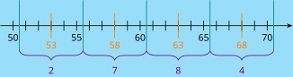
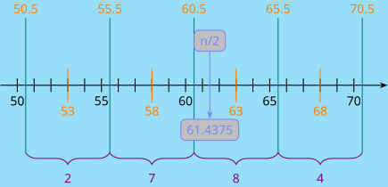

从分组频表求平均数、中位数和众数
用三个例子说明
赛跑和调皮的小狗
我们先从一组原始数据开始（还不是分组频率数据）……
59，65，61，62，53，55，60，70，64，56，58，58，62，62，68，65，56，59，68，61，67
要算平均数，阿力把所有数字加起来，再除以个数：
平均数 = （59 + 65 + 61 + 62 + 53 + 55 + 60 + 70 + 64 + 56 + 58 + 58 + 62 + 62 + 68 + 65 + 56 + 59 + 68 + 61 + 67）÷ 21 ≈ 61.38095
要找中位数，阿力把这些数从小到大排好，找出中间那个数：
53，55，56，56，58，58，59，59，60，61，61，62，62，62，64，65，65，67，68，68，70
因为有 21 个数，所以中位数是第 11 个数，61。
要找众数，也就是出现次数最多的数。阿力把这些数排好后统计每个数出现了几次：
- 53，55
- 56，56
- 58，58
- 59，59
- 60
- 61，61
- 62，62，62
- 64
- 65，65
- 67
- 68，68
- 70
其中 62 出现了三次，比其他数都多，所以：众数 = 62
分组频率表
接着阿力做了一个分组频率表：
| 秒数段 | 次数 |
|---|---|
| 51 - 55 | 2 |
| 56 - 60 | 7 |
| 61 - 65 | 8 |
| 66 - 70 | 4 |

意思是：
- 有 2 个人的成绩在 51 到 55 秒之间
- 有 7 个人在 56 到 60 秒之间
- 依此类推
但是！
突然之间，所有原始数据都丢了，现在只剩下一张分组频率表……
我们可以帮阿力只凭这张表算出平均数、中位数和众数吗？
答案是……不能准确算出来。不过可以估算。
用分组数据估算平均数
现在只有这张表：
| 秒数段 | 次数 |
|---|---|
| 51 - 55 | 2 |
| 56 - 60 | 7 |
| 61 - 65 | 8 |
| 66 - 70 | 4 |
每组之间的间隔是 5 秒，比如 51-55、56-60 等。
每组的中间值分别是：53、58、63 和 68。
我们可以用这些中间值来估算平均数。
为什么可以这样做呢？
比如说，第二组“56 - 60”中有 7 人，我们知道他们成绩都在这个区间内：
- 有可能全是 56 秒
- 也可能是全是 60 秒
- 但更可能的是分布在 56 到 60 之间
我们就假设这 7 人都跑了 58 秒（中间值）
接下来，把原来的数据换成中间值和次数：
| 中间值 | 次数 |
|---|---|
| 53 | 2 |
| 58 | 7 |
| 63 | 8 |
| 68 | 4 |
这样想：“2 个人用了 53 秒，7 个人用了 58 秒，8 个人用了 63 秒，4 个人用了 68 秒。” 换句话说，我们假设这些数据是这样的：
53, 53, 58, 58, 58, 58, 58, 58, 58, 63, 63, 63, 63, 63, 63, 63, 63, 68, 68, 68, 68
然后把这些数加起来，再除以 21。更快的方法是：用每个中间值乘以对应的次数：
| 中间值 x | 次数 f | 中间值 × 次数 fx |
|---|---|---|
| 53 | 2 | 106 |
| 58 | 7 | 406 |
| 63 | 8 | 504 |
| 68 | 4 | 272 |
| 总计： | 21 | 1288 |
于是可以估算平均时间为：
这个结果和之前算出的准确值非常接近。
从分组数据估算中位数
再来看一下这张表：
| 秒数段 | 次数 |
|---|---|
| 51 - 55 | 2 |
| 56 - 60 | 7 |
| 61 - 65 | 8 |
| 66 - 70 | 4 |
中位数是中间那个值，在这里是第 11 个数，它落在“61 - 65”这一组里。
我们可以说：“中位数组是 61 - 65”
但如果想要一个估算的中位数值，就要更仔细地看这组数据。
虽然写的是“61 - 65”，但它实际包括的是从 60.5 到 65.5（不包含 65.5）之间的所有值。
为什么？因为成绩是按整秒记录的，所以实际时间 60.5 会被记为 61，65.4 会被记为 65。
在 60.5 时，已经有 9 个人；到了下一个边界 65.5 时，总共有 17 个人。
如果在这之间画一条直线，就能找到第 \(n/2\) 个值的位置。

怎么找到需要画线的这一个点呢？61 - 65 这一组共有8个数，它前面已经有 9 个数，第 11 大约在这一组 1/4 的位置：(11 - 9) / 8。每组的宽度是 5，它的 1/4 位置对应的数值是 (1/4)x5。这一组从 60.5 开始，加上这一段距离：60.5 + ((11 - 9) ÷ 8) ⤫ 5。
有一个公式可以完成这个计算：
其中：
- \(L\) 是中位数组的下限
- \(n\) 是总数
- \(B\) 是中位数组之前各组的累计次数
- \(G\) 是中位数组的次数
- \(w\) 是组距
带入这个例子的数据：
- \(L = 60.5\)
- \(n = 21\)
- \(B = 2 + 7 = 9\)
- \(G = 8\)
- \(w = 5\)
代入公式得：
从分组数据估算众数
再来看一下这张表：
| 秒数段 | 次数 |
|---|---|
| 51 - 55 | 2 |
| 56 - 60 | 7 |
| 61 - 65 | 8 |
| 66 - 70 | 4 |
哪个组的次数最多？显然是“61 - 65”这一组。
所以可以说：众数所在的组是 61 - 65
但也可以做一个更具体的估算。
我们知道这一组包含了最多的数值，但它里面的哪个值最可能成为众数呢？
可以用下面这个公式来估算：
其中：
- \(L\) 是众数组的下限
- \(f_{m-1}\) 是众数组前一组的次数
- \(f_m\) 是众数组的次数
- \(f_{m+1}\) 是众数组后一组的次数
- \(w\) 是组距
带入数据：
- \(L = 60.5\)
- \(f_{m-1} = 7\)
- \(f_m = 8\)
- \(f_{m+1} = 4\)
- \(w = 5\)
代入公式得：
最终结果是：
- 估算平均数：61.333...
- 估算中位数：61.4375
- 估算众数：61.5
和一开始得到的真实值（平均数 61.38...，中位数 61，众数 62）相比，已经非常接近了。
这就是从分组频率表中估算平均数、中位数和众数的方法。
接下来我们再看两个例子，在练习中加深理解！
小胡萝卜的例子
你用特殊的土壤种了 50 根小胡萝卜。把它们挖出来后测量长度（精确到毫米），并分组如下：
| 长度（mm） | 次数 |
|---|---|
| 150 - 154 | 5 |
| 155 - 159 | 2 |
| 160 - 164 | 6 |
| 165 - 169 | 8 |
| 170 - 174 | 9 |
| 175 - 179 | 11 |
| 180 - 184 | 6 |
| 185 - 189 | 3 |
平均数
| 长度（mm） | 中间值 x | 次数 f | fx |
|---|---|---|---|
| 150 - 154 | 152 | 5 | 760 |
| 155 - 159 | 157 | 2 | 314 |
| 160 - 164 | 162 | 6 | 972 |
| 165 - 169 | 167 | 8 | 1336 |
| 170 - 174 | 172 | 9 | 1548 |
| 175 - 179 | 177 | 11 | 1947 |
| 180 - 184 | 182 | 6 | 1092 |
| 185 - 189 | 187 | 3 | 561 |
| 总计 | 50 | 8530 |
中位数
总共有 50 个数据，所以中位数是第 25 和第 26 个数的平均值，落在 170 - 174 组中：
- \(L = 169.5\)（这组的下限）
- \(n = 50\)
- \(B = 5 + 2 + 6 + 8 = 21\)
- \(G = 9\)
- \(w = 5\)
代入公式得：
众数
次数最多的一组是 175 - 179：
- \(L = 174.5\)（这组的下限）
- \(f_{m-1} = 9\)
- \(f_m = 11\)
- \(f_{m+1} = 6\)
- \(w = 5\)
代入公式得：
年龄的例子
年龄是一个特殊情况。
当说“小萨 17 岁”，她的年龄会保持为 17，直到她满 18 岁生日那天为止。 也就是说，她可能已经 17 岁又 364 天了，但仍然算作 17 岁。
这会影响中间值和组边界的计算方式。
比如：一个岛上住着 112 人，他们的年龄分组如下：
| 年龄段 | 人数 |
|---|---|
| 0 - 9 | 20 |
| 10 - 19 | 21 |
| 20 - 29 | 23 |
| 30 - 39 | 16 |
| 40 - 49 | 11 |
| 50 - 59 | 10 |
| 60 - 69 | 7 |
| 70 - 79 | 3 |
| 80 - 89 | 1 |
第一组“0 - 9”中的孩子可能快 10 岁了。因此这组的中间值是 5，而不是 4.5。
其他组的中间值分别是：15、25、35、45、55、65、75、85。
在计算中位数和众数时，也使用边界值：0, 10, 20, ... 而不是像前面例子那样用 9.5, 19.5 等。
平均数
| 年龄段 | 中间值 x | 人数 f | fx |
|---|---|---|---|
| 0 - 9 | 5 | 20 | 100 |
| 10 - 19 | 15 | 21 | 315 |
| 20 - 29 | 25 | 23 | 575 |
| 30 - 39 | 35 | 16 | 560 |
| 40 - 49 | 45 | 11 | 495 |
| 50 - 59 | 55 | 10 | 550 |
| 60 - 69 | 65 | 7 | 455 |
| 70 - 79 | 75 | 3 | 225 |
| 80 - 89 | 85 | 1 | 85 |
| 总计 | 112 | 3360 |
中位数
总共有 112 人，所以中位数是第 56 和第 57 个人的年龄平均值，落在 20 - 29 这一组：
- \(L = 20\)（这组的下限）
- \(n = 112\)
- \(B = 20 + 21 = 41\)
- \(G = 23\)
- \(w = 10\)
代入公式得：
众数
次数最多的一组是 20 - 29：
- \(L = 20\)（这组的下限）
- \(f_{m-1} = 21\)
- \(f_m = 23\)
- \(f_{m+1} = 16\)
- \(w = 10\)
代入公式得：
小结
对于分组数据，我们无法得到准确的平均数、中位数和众数，只能进行估算。
要估算平均数，使用每组的中间值：
要估算中位数，使用以下公式：
其中：
- \(L\) 是中位数组的下限
- \(n\) 是总数
- \(B\) 是中位数组前各组的累计次数
- \(G\) 是中位数组的次数
- \(w\) 是组距
要估算众数，使用以下公式：
其中：
- \(L\) 是众数组的下限
- \(f_{m-1}\) 是众数组前一组的次数
- \(f_m\) 是众数组的次数
- \(f_{m+1}\) 是众数组后一组的次数
- \(w\) 是组距